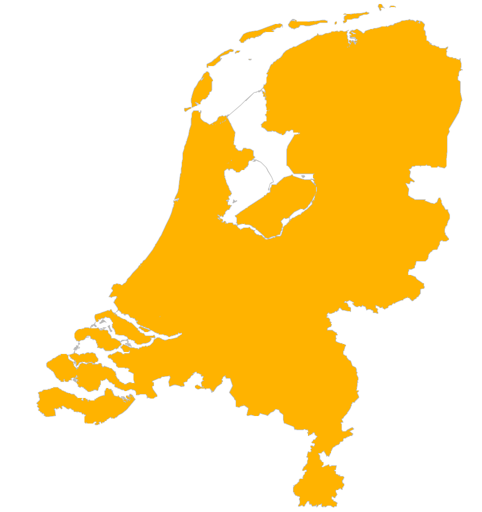

Live DevLog
| 24 Aug 2017 |
| 00:49:41 | FIXED |  Dir name fixups Dir name fixups |
| 00:47:15 | ART |  Open mouth version of Vryfdun. Gonna need that to make him talk. Open mouth version of Vryfdun. Gonna need that to make him talk. |
| 00:44:53 | DEVLOG |  Vryfdun will now also appear every once in a while. Vryfdun will now also appear every once in a while. |
| 00:38:51 | ART | Master Vryfdun |
| 00:33:16 | ART | Shaded version |
| 00:27:14 | ART | Global coloring version of Vertimon race |
| 00:25:32 | CONFIG |  Backup Tool Backup Tool |
| 00:22:01 | ART |  Line art model Vertimon race to which Master Vryfdun belongs. Line art model Vertimon race to which Master Vryfdun belongs. |
| 00:16:22 | PHANTASAR |  More correction work... Unfortunately there is a lot more to do... More correction work... Unfortunately there is a lot more to do... |
| 23 Aug 2017 |
| 21:46:23 | PHANTASAR | Corrected another chapter, but migraine is getting the better of me... :-( |
| 21:42:02 | TEST |  Let's try that again. Let's try that again. |
| 21:41:07 | FAILURE |  OpenOffice is acting crazy OpenOffice is acting crazy |
| 20:52:59 | STATUS |  Well, my prime concerns are now the sprite for Master Vryfdun and the scenario shower. Well, my prime concerns are now the sprite for Master Vryfdun and the scenario shower.These two things are the last two things I really need before the project can start officially. Well as far as it seems now, as I cannot be 100% sure yet.... But as far as it seems now that is the last I need... |
| 20:48:46 | BACKUP |  The Daily Backup is running The Daily Backup is running |
| 20:43:31 | JUDGMENT |  Better! Better! |
| 20:42:30 | COSMETIC |  A bit of moving A bit of moving |
| 20:41:31 | FIXED | Pic 404 |
| 20:39:02 | CLOSED |  LuaLibs/Love-Lua-Libraries#10 LuaLibs/Love-Lua-Libraries#10 |
| 20:38:52 | FIXED | LuaLibs/Love-Lua-Libraries#10 |
| 20:33:41 | TEST | Let's test this |
| 20:33:31 | USERINTERFACE |  Set the eye icon Set the eye icon |
| 20:33:18 | USERINTERFACE | "Eye" Gadget set up by patching a checkbox |
| 20:20:30 | ENHANCEMENT |  PatchGadget() PatchGadget() |
| 20:15:04 | ART | Eye icon for interface |
| 20:03:08 | CONFIRMED |  Some debug data generated by the game now do produce the required results. Some debug data generated by the game now do produce the required results. |
| 19:09:25 | CONFIRMED | The Meta fix in the Kthura map system |
| 19:05:20 | FIXED | a few curcial errors |
| 18:54:31 | SCREENSHOT |  |
| 18:49:50 | CONFIRMED | AT LAST! |
| 18:48:34 | FIXED | Wrong tag |
| 18:00:07 | FIXED | the Cockroach is squashed, but there are still bugs.... |
| 17:59:24 | FIXED | Tag Error |
| 17:58:32 | COCKROACH |  I think I'm getting there I think I'm getting there |
| 17:48:29 | COCKROACH | Whatever I do doesn't help, eh? |
| 17:48:07 | FIXED | Illegal map readout |
| 17:45:45 | FIXED | Def error |
| 17:41:47 | COCKROACH | Still persisting, but I'm making progress here. |
| 17:37:08 | COCKROACH | Aha... so the draw is executed, but update is not... |
| 17:30:34 | DEBUG |  The data shown by the debugger I got FINALLY at work shows the command is NOT being executed. The data shown by the debugger I got FINALLY at work shows the command is NOT being executed. |
| 17:25:02 | FIXED | Another one bites the dust |
| 17:21:38 | FIXED | Internal Script error |
| 17:17:15 | GAMEJOLT | more spam gone! |
| 17:05:20 | BLITZMAX |  recompiling builder recompiling builder |
| 17:04:24 | SCRIPT |  sval() sval() (How come that wasn't implemented before?) |
| 17:00:55 | DEBUG | Is this line gonna gimme some answers? |
| 16:58:46 | SCRIPT | QText() |
| 15:01:29 | COCKROACH | I was hoping it was fixed now or that I would have at least some answers, but nothing, nada... I don't have time.. I MUST go now... I'll be back in a jiffy.... |
| 15:00:50 | COCKROACH | HMMMMMM.... |
| 14:46:32 | DEBUG | Hopefully this line can answer a few questions |
| 14:42:30 | FIXED | Code Order issue |
| 14:12:30 | NOTE |  But before I investigate any further I have some "real life" trouble to take care of. But before I investigate any further I have some "real life" trouble to take care of. |
| 14:09:40 | COCKROACH | No report of non-existent events |
| 14:08:38 | INVESTIGATION | I'll take a look why that is |
| 14:06:51 | COCKROACH | Debug longs now confirm that the event function is REALLY ignored... |
| 14:05:37 | FAILURE | Segmentation fault |
| 13:59:34 | FIXED | Indeed.... |
| 13:59:06 | STUPIDITY |  I think this explains a lot... :-/ I think this explains a lot... :-/ |
| 13:57:34 | COCKROACH | And it appears I was right about that (but there are moments you DON'T want to be right, trust me). |
| 13:56:44 | DONE |  Little fixup (but I think this is gonna be a cockroach since the error thrown should not have been possible. There should just have been a code ignore in stead). Little fixup (but I think this is gonna be a cockroach since the error thrown should not have been possible. There should just have been a code ignore in stead). |
| 13:17:41 | CLOSED | #13 |
| 13:17:30 | FIXED | #13 |
| 13:17:27 | GITHUB |  Pushed libraries Pushed libraries |
| 13:04:31 | FIXED | Several nils |
| 13:00:07 | FIXED | #11 |
| 12:54:02 | DEVLOG | A bit of tweaking here. |
| 12:49:26 | TEST | Time to put everything I now have to the test. |
| 12:47:30 | CLOSED | #10 |
| 12:42:10 | FIXED | #10 |
| 12:33:47 | SCRIPT | The called script should now be executed |
| 12:28:34 | STUPIDITY | This is UNIX... Not Windows... and that explains the "%1" commit messages in my GitHub Repository... Sorry... |
| 12:23:18 | SCRIPT | An eventrunning function. I have the feeling I'll be needing it bad. |
| 12:19:54 | MAPSCRIPT |   Upon the activation event script the camera should now be placed to its proper position. Normally not something I'd announce here, but you gotta take in mind this is in this early stage a big feat. Upon the activation event script the camera should now be placed to its proper position. Normally not something I'd announce here, but you gotta take in mind this is in this early stage a big feat. |
| 11:58:25 | MAPSCRIPT | Skeleton code |
| 11:57:20 | KTHURA |  #10 #10 |
| 11:52:36 | MAPSCRIPT | Empty mapscript.... The first... (but not the last) |
| 11:35:29 | MAP | Folder for mapscripts cretaed |
| 11:33:47 | LOVE2D |  My recommendation is though, if your platform supports the downloadable version, go for that :P My recommendation is though, if your platform supports the downloadable version, go for that :P |
| 11:32:38 | HTML5 | Somebody was very nice to create a html5 version of the LOVE2D engine. If this will do any good for this game, I don't know, so the only promis I make is that I will investigate the possibilities here. |
| 11:31:50 | SITE |  Added tag HTML5 Added tag HTML5 |
| 11:25:42 | GAMEJOLT | And the spammers kept me of my work.... AGAIN.... |
| 11:11:18 | SCRIPT | CamPoint function |
| 10:56:14 | KTHURA | Ah, all it took was a recompilation.... Doh! |
| 10:55:31 | KTHURA | There is still a bit of trouble in the editor with picture bundles.... |
| 10:53:24 | NOTE | I'm afraid this is all I can show you at the present time. |
| 10:52:51 | SCREENSHOT |  |
| 10:51:46 | MAP | Background |
| 10:42:29 | SCRIPT | Set up the event class initiator for easy access from map scripts |
| 10:37:48 | SCRIPT | Well, the maploader does more than only loading the map itself. This has been sortened out. |
| 10:37:39 | SITE | Added tag MAPSCRIPT |
| 10:00:21 | SCRIPT | A function to start the event chain |
| 09:54:40 | MAP | I've placed some exit point that I will script the camera position upon. |
| 09:50:52 | DONE | A quick Music shuffling tool for my own entertainment :P |
| 09:12:08 | GAMEJOLT | Cleaning spam.... It always comes back... the cockroaches... |
| 22 Aug 2017 |
| 23:07:53 | BACKUP | Backup config should be fixed completely |
| 20:55:58 | NOTE | I hope I can soon post an actual screenshot, though! |
| 20:55:25 | GAMEJOLT | site set up |
| 18:47:57 | DONE | A few fix ups on stuff my backup tool didn't like |
| 12:50:40 | CONFIG | And some configuration was (once again) in order here. |
| 12:50:28 | BACKUP | Another back is running now |
| 12:45:29 | FIXED | A mapping issue on this |
| 12:29:27 | STUPIDITY | Ah, it doesn't seem to like that my build file is located in the resource list, but that is only a one time issue, so I'm not gonna bother. |
| 12:01:33 | BUG |  It doesn't work the way it should though. It doesn't work the way it should though. |
| 12:01:24 | NOTE | The developer will have a choice, but the builder will only ask once |
| 12:00:55 | BLITZMAX | JCR6 extractor set up for the Love Builder |
| 11:14:00 | NOTE | Clearly the Love Builder does not break over JCR6 files, and maybe it should... I'm gonna work that one out ;) |
| 21 Aug 2017 |
| 23:54:28 | SCENARIO | Start of game scenario written. |
| 23:22:43 | BUG | So GINI skips the first line of its files or something??? |
| 23:15:02 | FAILURE | The scenario editor throws an error without proper information so I need to sort this out! |
| 23:12:49 | CONFIG | Easiest way to start a new project with the scenario editor is by cannibalizing an existing one.
So I did with the TFTREVAMPED files and created the Scenario Language Project file
I need to sort out how the Love2D builder will respond to JCR6 files though, as I'm not sure.. |
| 23:05:14 | SCENARIO | At least we also got that tag, eh? |
| 23:02:05 | SITE | Added tag SCENARIO |
| 23:01:53 | SCRIPT | Linked Scenario loader to the game. I'll set up some stuff later |
| 23:01:00 | BACKUP | Well it's running |
| 23:00:50 | NOTE | Backup trouble |
| 20:16:50 | DEVLOG | Cool! Multi-language Devlog... For whatever reason we needed THAT :P |
| 19:47:32 | TEST | Just testing something |
| 12:00:11 | SCRIPT | Fow now "removed" the picloader and soundloader from it. This game doesn't need it anyway due to the "talking actor" based interface (as is common for point-and-click-adventures), and when it's needed a complete new loader using the love2d routines is needed anyway. |
| 11:58:56 | SCRIPT | Made some adaptions for Love2D |
| 11:58:46 | SCRIPT | Copied scenario code parser |
| 11:42:27 | GAMEJOLT | For starters cleaning up the forums from spam! |
| 11:41:53 | NOTE | Today I will not do that much, but I will try to get a few things done... |
| 20 Aug 2017 |
| 20:45:18 | BACKUP | I shall still run the daily backup though |
| 20:44:50 | NOTE | Not much i could do today.... Sundays are days I often have little time. |
| 20:35:48 | STATUS | The front and the back side.... normally the easiest sides for me to do, will now be a lot harder for me to do.
I will find a method to do so, though... |
| 20:30:07 | DONE | Set up the export well |
| 20:28:30 | NOTE | Due to proper shading effects I did not just "mirror" the east version, as that would not do the spider part of her body justice in the shading. I really had to do a bit more this time. |
| 20:27:49 | ART | Idle Sprite Kthura West |
| 13:15:57 | NOTE | Yeah, that can even happen in Lua... hard to believe, eh? |
| 13:15:44 | FIXED | Declaration bug |
| 13:01:02 | SCRIPT | I've set up an event chain function. I need this function because of Love2D's callback nature. Yeah, this can take stuff to take longer, indeed... :-/ |
| 19 Aug 2017 |
| 19:32:10 | BACKUP | This upgrade forced me to interrupt the backup, so let's restart it |
| 19:30:59 | FAILURE | Dang! Updates even get blocked... |
| 17:58:02 | UPGRADE | FINALLY! Here goes! |
| 17:55:07 | FAILURE | Apple bugs me about updates, but takes forever to show them to me... Figures... |
| 17:51:21 | SYSTEM | Well for days Apple is bugging me about an update, and I guess now is the time to do it... |
| 17:51:09 | SITE | Added tag SYSTEM |
| 17:44:38 | USERINTERFACE | This covers everything I wanted to be covered to close #9 |
| 17:42:02 | CONFIG | Some extra configuration was in order here... |
| 17:41:38 | BACKUP | Xtra Backup Running |
| 17:40:43 | USERINTERFACE | But at least I can see the inventory screen works as far as it should work for now... |
| 17:40:26 | FAILURE | LAAAAGS! |
| 17:38:43 | FAILURE | I almost died suffocating in a piece of Krupuk. |
| 17:32:31 | FIXED | Variable typo |
| 17:31:46 | USERINTERFACE | Zamzi should show as inventory item now |
| 17:31:20 | FAILURE | I wonder why those Segmentation Faults happen.
As they happen randomly this is hard to fix. |
| 17:19:18 | ART | Zamzi as inventory item |
| 17:16:30 | USERINTERFACE | Inventory sorter added. This will, when the time comes, allow me to add Zamzi to the inventory as item. It will not be much what you need Zamzi for, but hey, as a flying pet for Kthura, he can play an important role, right? |
| 17:10:33 | USERINTERFACE | Greater Alpha
And worked out on the y coordinates...
Let's see how that works out when we see that... :-/ |
| 17:09:16 | USERINTERFACE | Ah... better |
| 17:07:46 | USERINTERFACE | Still nothing? |
| 17:07:26 | FIXED | "Nil" |
| 17:07:17 | FAILURE | Segmentation Fault (???) |
| 17:04:41 | USERINTERFACE | Set up the sockets for use in the game. Their full workings will be scripted out later. |
| 16:47:15 | UPDATED |  #2 #2 |
| 16:47:03 | USERINTERFACE | Inventory socket |
| 16:37:38 | ART | Kthura Facing East Talking |
| 16:21:21 | FIXED | Fixed that! |
| 16:21:17 | STUPIDITY | Ah |
| 14:38:40 | BUG | Although I cannot yet see that... :-/ |
| 14:37:02 | USERINTERFACE | Added Kthura's head to the interface.
That head is pretty important, as this will allow you to access the save menu and config menu and it will allow you to use items on Kthura herself. |
| 14:12:42 | FIXED | More stupid errors |
| 14:10:11 | FIXED | Folder Typo |
| 14:08:02 | STUPIDITY | Oh wait that was no cockroach... that was just stupid |
| 14:07:14 | COCKROACH | Not quite... |
| 14:06:46 | SOLVED |  I think I found out why that is... I think I found out why that is... |
| 13:43:47 | USERINTERFACE | It only doesn't appear when it should though, and that needs to be sorted out! |
| 13:43:22 | USERINTERFACE | Base config |
| 12:41:18 | FAILURE | GIMP is now taking its sweet time :-/ |
| 12:38:24 | USERINTERFACE | EVERYBODY who dares the background color of this background plasma "PINK" really needs to go to an ophthalmologist. This is MAGENTA!!! Much darker than Pink. THIS IS PINK
I hope you can see the difference! |
| 12:23:23 | SITE | Added tag USERINTERFACE |
| 01:26:27 | NOTE | But for now I'm calling it a day, and nothing someone says before the word "but" really counts, so this note is what counts, and not my status note :P |
| 01:25:58 | STATUS | Well, next I need to work out the working with actors, and the blockmap... After this I can think for getting the UI to work... Well, the official start is nearing |
| 01:24:03 | JUDGMENT | success |
| 01:23:56 | TEST | Mörker |
| 01:23:37 | FAILURE | FAIL! :P |
| 01:23:26 | TEST | Test message to test things in the Devlog Tool I set for $morker.
We do want Mörker to proceed smoothly, don't we? |
| 01:21:55 | GITHUB | Mörker pushed |
| 00:57:37 | GITHUB | Error Tag pushed |
| 00:57:07 | GITHUB | Fixes to qgfx2 pushed |
| 00:56:54 | GITHUB | Kthura for Love as it is now pushed |
| 00:54:17 | FAILURE | Freeze! |
| 00:54:00 | CONFIG | Backup tool |
| 00:31:12 | BACKUP | Daily Backup |
| 00:18:17 | JUDGMENT | RESULTS!!!!! COOL! |
| 00:13:21 | FIXED | Several table reference errors fixed. |
| 00:10:25 | EXPERIMENT |  Yes? Yes? |
| 00:08:59 | FIXED | A QGFX error |
| 00:04:07 | FIXED | And a parse-typo fixed |
| 00:03:57 | EXPERIMENT | Let's see what happens if I put in the multi-pics |
| 00:03:33 | JUDGMENT | still a blank screen |
| 18 Aug 2017 |
| 23:57:58 | FIXED | Illegal function call |
| 23:57:53 | BUG | I should of course have known it wouldn't be that easy |
| 23:57:06 | KTHURA | Single Pics should be supported now |
| 23:48:58 | STATUS | no more errors |
| 23:48:33 | FIXED | Invalid variable name |
| 23:47:56 | FIXED | Illegal function call |
| 23:46:39 | FIXED | Illegal dominance readout resulting in "nil" |
| 23:44:45 | KTHURA | Now acting in the order of the dominance map |
| 23:40:12 | KTHURA | Dominance mapper |
| 23:28:49 | CLOSED | #8 |